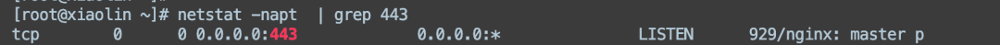

Linux¶
1、怎么看端口被哪个进程监听了？¶

-a 显示所有状态的socket
-n 不做名字解析，不加此参数，80端口会显示成http,127.0.0.1显示成localhost,uid为0显示成root等等
-e 显示更多信息如用户，inode
-p 显示pid和程序名字
-t 显示tcp链接
-u 显示udp链接
-x 显示unix套接字
2、top命令有哪些参数，说一下¶
top命令是一个用于**实时监控系统资源和进程的命令**，它可以显示**当前运行的进程、CPU使用情况、内存使用情况等信息**。以下是一些常用的top命令参数：
- -d <秒数>：指定top命令刷新的时间间隔，默认为3秒。
- -n <次数>：指定top命令执行的次数后自动退出。
- -p <进程ID>：指定要监控的进程ID。
- -u <用户名>：只显示指定用户名的进程。
- -s <排序字段>：按指定字段对进程进行排序，常见的字段有cpu（CPU使用率）、mem（内存使用率）等。
- -H：显示进程的层次关系。
- -i：只显示运行中的进程，不显示僵尸进程。
3、怎么显示线程？¶
在Linux中，可以使用以下命令来显示线程：
- top命令：在top命令的默认显示中，可以看到每个进程的线程数（Threads列）。例如，执行top命令后，按下"Shift + H"键可以切换到线程视图，显示每个进程的线程信息。
- ps命令：通过ps命令结合选项来显示线程。例如，使用"ps -eLf"命令可以显示系统中所有线程的详细信息。
4、怎么查看日志？¶
5、Linux用过吗，常用哪些操作？¶
chmod
chown
useradd
groupadd
netstat等等
文件相关(mv mkdir cd ls)
docker相关(docker container ls docker ps -a )
测试相关(测试连通性:ping 测试端口连通性:telnet)
6、Linux中查看进程运行状态的指令、查看内存使用情况的指令、tar解压文件的参数。¶
-
查看进程运行状态的指令：ps命令。“ps -aux | grep PID”，用来查看某PID进程状态
-
ps： 仅输入
ps命令会显示当前终端的运行进程。 - ps aux： 显示所有用户的所有进程的详细信息，包括用户、进程 ID、CPU 使用率、内存使用率等。
- ps -ef： 类似于
ps aux，但输出格式略有不同，同样显示所有用户的所有进程。 - ps -e： 显示所有进程，等价于
ps -A。 - ps -f： 显示全格式的进程信息，包括更多详细信息。
- ps -l：：显示长格式的进程信息。长格式显示了更多的信息，例如进程命令行、进程状态（S）、进程的会话ID（SID）等。
- ps u： 显示当前用户的进程详细信息，包括用户、进程 ID、CPU 使用率、内存使用率等。
-
ps -o pid,user,%cpu,%mem,cmd： 自定义输出格式，只显示进程 ID、用户、CPU 使用率、内存使用率和命令。
-
查看内存使用情况的指令：free命令。“free -m”，命令查看内存使用情况。
-
tar解压文件的参数：
五个命令中必选一个 -c: 建立压缩档案 -x：解压 -t：查看内容 -r：向压缩归档文件末尾追加文件 -u：更新原压缩包中的文件 这几个参数是可选的 -z：有gzip属性的 -v：显示所有过程 -j：有bz2属性的 -Z：有compress属性的 -O：将文件解开到标准输出
8、文件权限怎么改¶
Linux文件的基本权限就有九个，分别是owner/group/others三种身份各有自己的read/write/execute权限 修改权限指令：chmod
| r | w | X |
|---|---|---|
| 4 | 2 | 1 |
[root@www ~]# chmod [-R] xyz 文件或目录
选项与参数：
xyz : 就是刚刚提到的数字类型的权限属性，为 rwx 属性数值的相加。
-R : 进行递归(recursive)的持续变更，亦即连同次目录下的所有文件都会变更
# chmod 770 test.c //即修改test.c文件的权限为770
chmod +x 添加文件可执行权限
10、说说常用的Linux命令¶
- cd命令：用于切换当前目录
- ls命令：查看当前文件与目录
- grep命令：该命令常用于分析一行的信息，若当中有我们所需要的信息，就将该行显示出来，该命令通常与管道命令一起使用，用于对一些命令的输出进行筛选加工。
- cp命令：复制命令
- mv命令：移动文件或文件夹命令
- rm命令：删除文件或文件夹命令
- ps命令：查看进程情况
- kill命令：向进程发送终止信号
- tar命令：对文件进行打包，调用gzip或bzip对文件进行压缩或解压
- cat命令：查看文件内容，与less、more功能相似
- top命令：可以查看操作系统的信息，如进程、CPU占用率、内存信息等
- pwd命令：命令用于显示工作目录。
12、说说如何以root权限运行某个程序。¶
你提供的两个命令是在 Unix 或类 Unix 系统上更改文件的所有者和设置 SetUID 权限的操作。下面解释一下这两个命令的含义：
sudo chown root app：sudo：以超级用户权限执行命令。chown：修改文件所有者。root：将文件的所有者更改为 "root" 用户。app：文件名，表示要更改所有者的目标文件。
这个命令的作用是将文件 app 的所有者更改为 "root" 用户。这可以用于确保只有特定的管理员用户能够修改或访问该文件。
sudo chmod u+s app：sudo：以超级用户权限执行命令。chmod：修改文件权限。u+s：为用户权限添加 SetUID 权限。app：文件名，表示要设置 SetUID 权限的目标文件。
这个命令的作用是将文件 app 的 SetUID 权限设置为被执行时获取该文件所有者的权限。这意味着当某用户执行这个文件时，程序会以文件所有者的权限来运行，而不是以执行用户的权限。
综合来看，这两个命令的目的是为了确保文件 app 的安全性和权限控制。它们将文件的所有者更改为 "root" 用户，同时设置 SetUID 权限，使得执行该文件时以 "root" 用户的权限运行程序。这在需要特定权限的应用场景中可能会有用。然而，请务必谨慎使用这些权限设置，以确保系统的安全性。
14、说说软链接和硬链接的区别。¶
-
定义不同 软链接又叫符号链接，这个文件包含了另一个文件的路径名。可以是任意文件或目录，可以链接不 同文件系统的文件。 硬链接就是**一个文件的一个或多个文件名**。把文件名和计算机文件系统使用的节点号链接起来。因 此我们可以用多个文件名与同一个文件进行链接，这些文件名可以在同一目录或不同目录。
-
限制不同 硬链接只能对已存在的文件进行创建，不能交叉文件系统进行硬链接的创建； 软链接可对不存在的文件或目录创建软链接；可交叉文件系统；
-
创建方式不同 硬链接不能对目录进行创建，只可对文件创建 软链接可对文件或目录创建；
-
影响不同 删除一个硬链接文件并不影响其他有相同 inode 号的文件。 删除软链接并不影响被指向的文件，但若被指向的原文件被删除，则相关软连接被称为死链接（即 dangling link，若被指向路径文件被重新创建，死链接可恢复为正常的软链接）。
-
物理性质：
- 软链接：软链接实际上是一个指向目标文件或目录的路径，类似于 Windows 中的**快捷方式**。软链接文件有自己的 inode（索引节点），但内容只包含目标文件的路径信息。
- 硬链接：硬链接是指向同一索引节点（inode）的不同文件名。硬链接与目标文件在磁盘上**共享同一数据块**，可以**看作是文件的别名**。
16、系统检测工具¶
tcpdump: 网络抓包工具 (Wireshark)¶
- -n：使用IP地址表示主机，而不是主机名；使用数字表示端口号，而不是服务名称；
- -i：指定要监听的网卡接口。“-i any”标识抓取所有网卡接口上的数据包；
- -v：输出一个稍微详细的信息；
- -t：不打印时间戳；
- -e：显示以太网帧头部信息；
- -c：紧抓取指定数量的数据报；
- -x：以十六级进制显示数据包内容，但不显示包中以太网帧的头部信息；
- -X：与-x类似，还打印每个十六进制字节对应的ASCII字符；
- -XX：与-XX类似，还打印以太网帧的头部信息；
- -s：设置值抓包时候的抓取长度(默认为65535字节)；
- -S：以绝对值来显示TCP报文段序号，而不是相对值；
- -w：将tcpdump的输出以特殊格式定向到某个文件；
- -r：从文件读取数据报并显示。
tcpdump还支持用表达式来进一步过滤数据报，其操作数分为三种：类型、方向、协议。
- 类型：解释其后i按紧跟着的参数的含义，如host、net、port和portrage等。如抓取整个1.2.3.0/255.255.255.0网络上的数据包：
$ tcpdump net 1.2.3.0/24； - 方向：src指定数据包的发送端，dst指定数据包的目的端，如抓取进入端口13579的数据包
$ tcpdump dst port 13579； - 协议：指定目标协议。如抓取所有ICMP数据包：
$ tcpdump icmp;
lsof¶
lsof (list open fle)是一个列出当前系统打开的文件描述符的工具。通过它我们可以了解感兴趣的进程打开了哪些文件描述符，或者我们感兴趣的文件描述符被哪些进程打开了。，其选项有：
- -i：显示socket文件描述符，常用方法：
$ isof -i [46] [protocol][@hostname][ipaddr][:service|port]。如要显示所有链接到主机192.168.1.108的ssh服务的socket文件描述符可使用：$ lsof -i@192.168.1.108:22。若-i选项后不指定任何参数，则显示所有socket文件描述符； - -u：显示指定用户启动的所有进程打开的文件描述符；
- -c：显式指定的命令打开的所有文件描述符，若要查看websrv程序打开了哪些文件描述符，可以使用命令
$ lsof -c websrv; - -p：显示指定进程打开的所有文件描述符；
- -t：仅显示打开了目标文件描述符的进程的PID。
nc¶
快速构建网络连接，让其**以服务器方式运行，监听某个端口并接受客户连接，可用来调试客户端程序**。也可以以**客户端方式运行，向服务器发起连接并收发数据，可用来调试服务器程序**。
- -i：设置数据包传送的时间间隔；
- -l：以服务器方式运行，监听指定的端口。nc默认以客户端方式运行；
- -k：重复接收并处理某个端口上的所有链接，必须与-l选项一起使用；
- -n：使用IP地址标识主机，使用数字表示端口号；
- -p：当nc命令以客户端方式运行时，强制其使用指定的端口号；
- -s：设置本地主机发送出的数据包的IP地址；
- -C：将CR和LF两个字符作为行运行字符；
- -U：使用UNIX本地域协议通信；
- -u：使用UDP协议，nc默认是TCP协议；
- -w：如果nc客户端在指定时间内未检测到任何输入，则退出；
- -X：当nc客户端和代理服务器通信时，该选项指定其通信协议；
- -x：制定目标代理服务器的IP地址和端口号；
- -z：扫描目标机器上的某个或某些服务是否开启。
实例：连接websrc服务器并发送数据：
strace¶
测试服务器性能的重要工具，跟踪程序运行过程中执行的系统调用和接收到的信号，并**将系统调用名、参数、返回值和信号名输出到标准输出或指定的文件**。
- -c：统计每个系统调用的执行时间、执行次数和出错次数；
- -f：跟踪由fork调用生成的子进程；
- -t：在输出的每一行信息前加上时间信息；
- -e：指定一个表达式
netstat¶
netstat 是一个功能很强大的**网络信息统计工具**。它可以打印本地网卡接口上的全部连接、路由表信息、网卡接口信息等。对本书而言，我们主要利用的是上述功能中的第一个**即显示 TCP 连接及其状态信息**。毕竟，要获得路由表信息和网卡接口信息，我们可以使用输出内容更丰富的 route 和 ifconfig 命令。
- -n：使用IP地址标识主机名，使用数字表示端口号；
- -a：显示结果中也包含监听socket；
- -t：仅显示TCP连接；
- -r：显示路由信息；
- -i：显示网卡接口和数据流量；
- -c：每隔一秒输出一次；
- -o：显示socket定时器的信息；
- -p：显示socket所属的进程PID和名字。
vmstat¶
vmstat 是 virtual memory statistics 的缩写，它**能实时输出系统的各种资源的使用情况比如进程信息、内存使用、CPU 使用率以及I/O 使用情况**。
- -f，显示系统自启动以来执行的 fork 次数
- -s，显示内存相关的统计信息以及多种系统活动的数量(比如 CPU 上下文切换次数)
- -d，显示磁盘相关的统计信息。
- -p，显示指定磁盘分区的统计信息。
- -S，使用指定的单位来显示。参数 k、K、m、M分别代表 1000、1024、1000 000 和 1048 576字节。
- delay，采样间隔(单位是 s)，即每隔 delay 的时间输出一次统计信息
- count，采样次数，即共输出 count 次统计信息。
ifstat¶
ifstat 是 interface statistics 的缩写，它是一个简单的网络流量监测工具。
- -a：检测系统上所有网卡接口；
- -i：指定要检测的网卡接口；
- -t：在每行输出的信息前加上时间戳；
- -b：以Kbit/s为单位，而不是默认的KB/s；
- delay：采样间隔
- count：采样次数
mpstat¶
mpstat 是 multi-processor statistics 的缩写，它**能实时监测多处理器系统上每个CPU 的使用情况。mpstat命令和 iostat 命令通常都集成在包 sysstat 中，安装 sysstat 即可获得这两个命令**。mpstat 命令的典型用法是 (mpstat 命令的选项不多，这里不再专门介绍)
mpstat [-P [{ALL}] [interval] [count]]